10.31.2007 14:11
AIS Class B in USA update
Panbo has an update on AIS Class B:
AIS Class B in the USA, just "a matter of weeks"
Plus take a look at the 3D chart display screen shot at the bottom of this page: (thanks to Briana for pointing this out!)
3D & G, wowsuh!
AIS Class B in the USA, just "a matter of weeks"
Plus take a look at the 3D chart display screen shot at the bottom of this page: (thanks to Briana for pointing this out!)
3D & G, wowsuh!
10.31.2007 13:56
Simile Timeplot and Timeline
The simile project has two really cool AJAX/DHTML javascript projects:
Timeplot
Timeline
Thanks to Rob for showing me these really handy tools.
Timeplot
Timeplot allows web site authors to embed interactive time series plots into their sites and overlay Timeline event files over them.
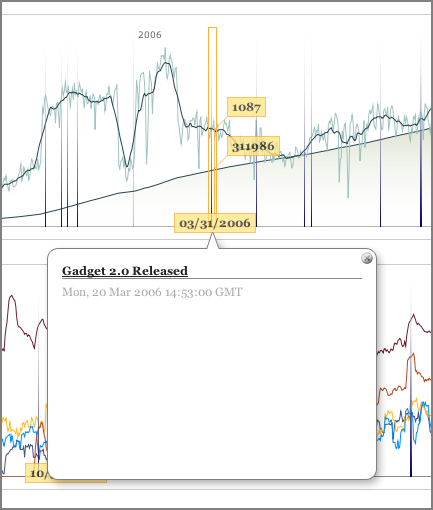
Timeline
Timeline is a DHTML-based AJAXy widget for visualizing time-based events. It is like Google Maps for time-based information. Below is a live example that you can play with. Pan the timeline by dragging it horizontally.
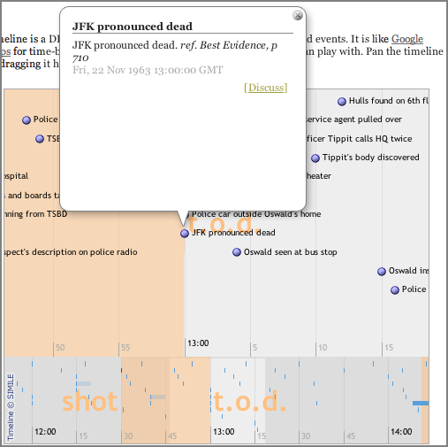
Thanks to Rob for showing me these really handy tools.
10.31.2007 09:26
IEC 62320-1 1.0 - AIS Base stations - minimum op and performance specs
IEC 62320-1 Ed. 1.0 English
Maritime navigation and radiocommunication equipment and systems - Automatic identification system (AIS) - Part 1: AIS Base Stations - Minimum operational and performance requirements, methods of testing and required test results . Specifies the minimum operational and performance requirements, methods of testing and required test results for AIS Base Stations, compatible with the performance standards adopted by IMO Res. MSC.74 (69), Annex 3, Universal AIS. It incorporates the technical characteristics of non-shipborne, fixed station AIS equipment, included in the relevant ITU and IALA recommendations. Where applicable, takes into account the ITU Radio Regulations.IEC 62287-1 Ed. 1.0 English
Maritime navigation and radiocommunication equipment and systems - Class B shipborne equipment of the automatic identification system (AIS) - Part 1: Carrier-sense time division multiple access (CSTDMA) techniques . Specifies the minimum operational and performance requirements, methods of testing and required test results for Class B shipborne AIS equipment using CSTDMA techniques. Takes into account other associated IEC International Standards and existing national standards. Is applicable for AIS equipment used on craft that are not covered by the mandatory carriage requirement of AIS under SOLAS Chapter V.IEC/PAS 60936-5 Ed. 1.0 English
Maritime navigation and radiocommunication equipment and systems - Radar - Part 5: Guidelines for the use and display of AIS information on radar . Specifies the minimum operational and performance requirements, methods of testing and required test results and the effect on extant standards, that are recommended to be complied with for optional equipment conforming to Interim Operational Guidelines not inferior to those adopted by the IMO in SN/Circ.217. Is limited to requirements for superimposition of selected parts of AIS information on radar systems.IEC/PAS 61162-101 Ed. 1.0 English
Maritime navigation and radiocommunication equipment and systems - Digital interfaces - Part 101: Single talker and multiple listeners - Modified sentences and requirements for IEC 61162-1 . Contains additional requirements for existing sentences and details additions to the existing format which have been found desirable in the light of field experience. Reference is made to IEC/PAS 61162-100 which covers the requirements of the universal shipborne Automatic Identification System (AIS).
10.30.2007 07:42
Humpback satellite tags
Another whale tracking project (but I'm not involved with this one):
Satellite Tags on Humpback Whales Expose Unknown Migration Routes
Satellite Tags on Humpback Whales Expose Unknown Migration Routes
An international group of scientists is learning new things about the migration routes and daily habits of South Pacific humpback whales from satellite tags the group recently placed in the thick blubber of 20 whales. Tagged off New Caledonia and the Cook Islands, individual whales are taking divergent and circuitous routes to the austral summer feeding grounds of the Antarctic, the data show. . "The tagged whales provided fascinating surprises for the research team almost immediately," said Dr. Phil Clapham of NOAA Fisheries Service's Alaska Fisheries Science Center. "The whales are telling us where they go, and we have already learned new things about their preferred habitats and migratory routes." . "Right now, 10 tags are still operating - five each from New Caledonia and the Cook Islands," Clapham added. "We hope that they will continue to transmit for weeks or months, showing the final destinations of these animals as they undertake their long migration from the tropics to the cold waters of the Southern Ocean." ...
10.28.2007 10:28
gardens/yard update
The garden is pretty much no more. I've got one tomato wating for me,
a couple beans, and a couple jalapenos. I am going to think twice
before eating one of those jalapenos raw. Russian roulette with 1
fireball out of 6 so far.
I clearly have a space issue. After I harvest the last of the beans, I am going to Agway for more brass clips and that arch is going to have to become a 2nd compost pile.
I had a urge to jump in the leaf pile, but thankfully I remembered how many sticks are in there and that the leave are all wet. I make a good halloween monster running around the back yard covered in leaves, but not today.
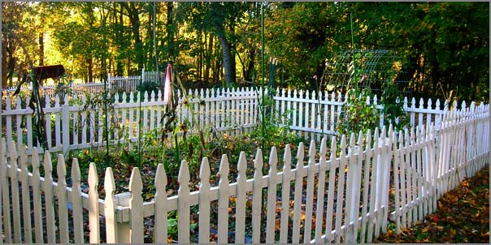
I clearly have a space issue. After I harvest the last of the beans, I am going to Agway for more brass clips and that arch is going to have to become a 2nd compost pile.
I had a urge to jump in the leaf pile, but thankfully I remembered how many sticks are in there and that the leave are all wet. I make a good halloween monster running around the back yard covered in leaves, but not today.
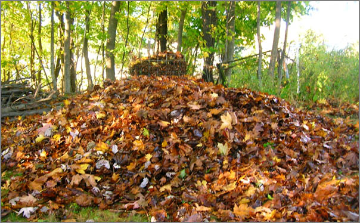
10.27.2007 23:31
Gamble House
Today, I finally made it to the Gamble House. Wow! Only it
was 7 AM and not good lighting for taking pictures. I gave it my
best. This is the front of the house.
In the back, there is a simple, yet stylish stone patio with a pond.
Now that the wind has shifted, the basin and range is catching the brunt of the smoke. Pretty nasty looking during the day.
How ever, today gave me one heck of a sunset. And I didn't get just one sunset. First, I got a sunset behind the control tower. Then in the air, I got a second one behind us as we headed east.
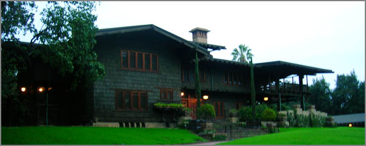
In the back, there is a simple, yet stylish stone patio with a pond.
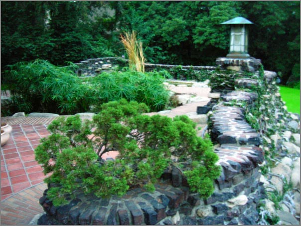
Now that the wind has shifted, the basin and range is catching the brunt of the smoke. Pretty nasty looking during the day.
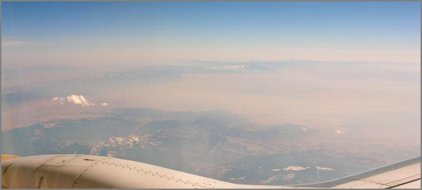
How ever, today gave me one heck of a sunset. And I didn't get just one sunset. First, I got a sunset behind the control tower. Then in the air, I got a second one behind us as we headed east.
10.27.2007 16:00
Maple tar spot - Rhytisma acerinum
This is a picture from March of this year, but only now did I run back
into it. These tar spots hit hard during the summer of 2006 on the
maples in NH. Lukily, I only saw a couple of spots towards the end of
September. This year I struggled with some blight on the tomatoes and
a bug that got about third of my huge rose bush, but I don't have
those buggers identified yet.
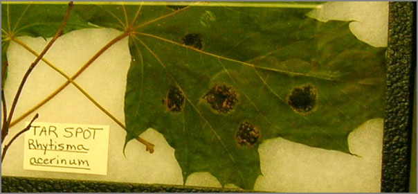
10.26.2007 16:02
Viz04 demo working again (SSI back on)
Roland disabled plone on our server. For some reason, SSI was
interfering with plone, but now that plone is gone, we have SSI back
on. Hence, my 2004 web base visualization presentation is back. This
was my entry in the 2004 SIO Visualization Contest. Just pretent that
you are looking at the figures completely covering a 21 foot wide
display. The menu along the bottom is done using a single file with SSI.
<!--#include virtual="pop_navigation_include.html" -->Start at: Slide 1
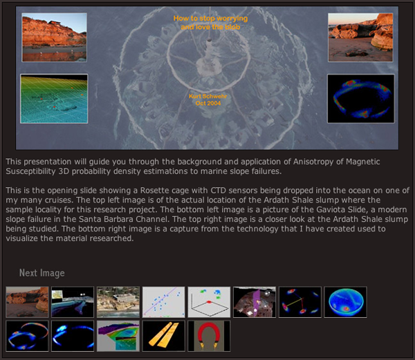
10.26.2007 12:23
density 0.24 with state stamp markup language (ssml)
Just release density
0.24. The key addition is State Stamp Markup Language. This provides
a very simple way to animate a scene with the simpleviewer.
- version: Released 0.24
- simpleview.C: Added state stamp markup language files for animation (ssml). Uses libxml2.
- ssml: A language that is a more time oriented than RKSML (Rover Kintematic State Markup Language)
- simpleview.C: Uses SbTime for tracking time
- simpleview.C: Reworked intialization on startup a bit
- simpleview_cmd.ggo.in: Added statestamp and timescale options
- general: used gengetopt 2.21 instead of 2.19
- Makefile: added libxml2 to simpleview
- Makefile: SRL found a typo in rule name for install-density.info
- TODO: Realizing that autoconf is soon in the future
10.25.2007 18:02
density needs autoconf
I think I may have reached the point where my density
package needs to become autoconf'ed. I don't
really look forward to the process and I've only done one packaging of
autoconf (netcat back in 1999), but it just has to happen if this
thing is going to live on and not run me over.
BTW, from Judy, I got this link which is this (my blog) blog syndicated through LiveJournal:
http://syndicated.livejournal.com/kurtschwehr/... I have one reader. Woohoo! And I bet that is Judy
BTW, from Judy, I got this link which is this (my blog) blog syndicated through LiveJournal:
http://syndicated.livejournal.com/kurtschwehr/... I have one reader. Woohoo! And I bet that is Judy
10.24.2007 09:10
SD fire map update
http://signonsandiego.lamphost.net/pdfs/10242007_0500hrs_Evac_FirePerem.pdf
which is from http://sdcountyemergency.com/
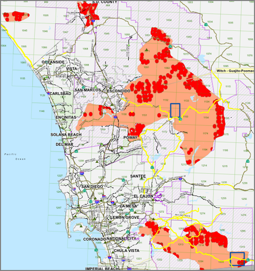
10.24.2007 07:58
The LA fires
Yesterday, from the roof of JPL's 168, it looked like we were on Titan
rather than in Pasadena.
(I changed the levels a bit in photoshop, but that is all that I did.)
(I changed the levels a bit in photoshop, but that is all that I did.)
10.23.2007 10:14
UNH GIS day - Nov 14th
I am bummed that I will not be able to be there for this year's UNH
GIS day. Last years event was a huge success and a ton of fun.
GIS Day at UNH
GIS Day at UNH
10.23.2007 07:57
SoCal fires (again)
Life in SoCal is being hard on a lot of people. In the Pasadena area,
we are fine, but things are not good and even here the air quality.
wwdn describes it like being back in the 70's with the smog. I have to
agree.
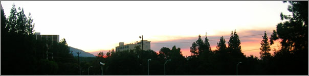
10.22.2007 18:09
Santa Ana winds and finds
Santa Ana
winds are making things a bit crazy around here. The air is a
little bit smoky around JPL, but it's really not bad. Other areas are
suffering the brunt of the trouble. Hopefully this passes quickly.
10.21.2007 19:06
Pasadena Skyline
I've been trying to get a shot like this for a while. Finally pulled
it off. This is a awesome skyline!
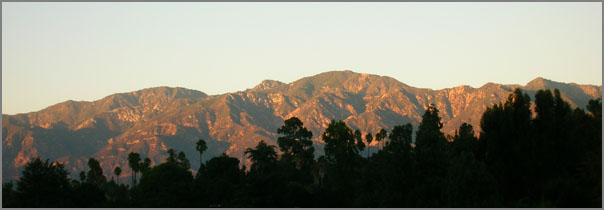
10.21.2007 12:37
lxml iterparse mode for speed
Using an lxml etree to walk a tree of 100k objects is decidedly a bad
idea. It chews up a huge amount of memory and takes forever to get
the tree loaded (after 15 minutes, I stopped checking). I am moving
some of my code to the iterparse style of handling XML which is
several order of magnitude faster. By controlling what tags get trees
built, it runs in less than a second now. Here is a tiny.rksml
example of the xml source:
<?xml version="1.0" encoding="UTF-8"?> <RPK_Set> <State_History> <Node Source="Kurt" Time= "1192994832.9159949"> <Knot Name="SHOULDER_AZ" Units="RADIANS">-0.619</Knot> </Node> <Node Source="Kurt" Time= "1192994832.9159949"> <Knot Name="SHOULDER_EL" Units="RADIANS">-0.1231</Knot> </Node> </State_History> </RPK_Set>And here is the code that can quickly walk the parts of the tree that I need:
#!/usr/bin/env python
from lxml import etree
for event,element in etree.iterparse('tiny.rksml',tag='Knot'):
print event, etree.tostring(element)
And the resulting output:
./iterparse.py end <Knot Name="SHOULDER_AZ" Units="RADIANS">-0.619</Knot> end <Knot Name="SHOULDER_EL" Units="RADIANS">-0.1231</Knot>For my actual program, this does require me to do a lot more book keeping. There is no peaking backwards or upwards of the current element unless I cache what I need.
10.20.2007 12:44
Turning Ubuntu into a GIS workstation - The Mac OSX fink view
Turning Ubuntu into a GIS workstation [perrygeo.net] is an interesting list of applications to get people going on GIS with linux. His list is:
- Postgresql/PostGIS : a relational database with vector spatial data handling
- GRASS : A full blown GIS analysis toolset
- Quantum GIS: A user-friendly graphical GIS application
- GDAL, Proj, Geos : Libraries and utilities for processing spatial data
- Mapserver : web mapping program and utilities
- Python bindings for QGIS, mapserver and GDAL
- GPSBabel : for converting between various GPS formats
- R : a high-end statistics package with spatial capabilities
- GMT : the Generic Mapping Tools for automated high-quality map output
Where are we with fink and what is my take? Postgresl/PostGIS is in great shape. GRASS is there, but I haven't used it in 10 years. QGIS is quite a bit out of date. gdal is okay, but needs some tweaking. Proj and Geos are up-to-date with the stable versions. Python bindings for gdal are there (the old one, not the NG version). The python bindings for mapserver and QGIS are not there. gpsbabel is good. R (called r-base in fink) is up to the latest.
Mapserver still needs to get installed. Rob and I are also working on featureserver. mbsystem is on my list as I work in the world of multibeam sonar data and it also has some handy GMT helpers. pyproj is still one version out of date. I also use Coin3D/density to render 3D objects that I write out in VRML. Sprinkle in a bunch more python packages and I think that about covers where we are at right now. The work is never finished.
10.19.2007 21:25
Barn Burner BBQ
Today I got my little model of the Phoenix Lander to start moving in
simpleview. I think my time with C++ is over for the moment and I can
move back to the happier land of python. Programming with libxml2 and
std::vector is just not the same as breezing through a little lxml
python. I still have to face the fact that some of my coordinate
frames are upsidedown and/or backwards, but I can fix with that.
This evening, I went along to dinner with a fun crew. Judy, Adam, Ivan, and Jenny. We hit up Barn Burner for a huge plate-o-bbq. The drinks came in mason jars and we all got properly messy.
On the way out the door I thought, "Why would I possibly need my camera this evening?" Well, I didn't realize that I would be eating next to the fire pit and giant chicken. So instead, I have a cell phone picture that is even stranger with low light than my point and shoot. Hopefully Jenny posts some of her pics from her real camera.
This evening, I went along to dinner with a fun crew. Judy, Adam, Ivan, and Jenny. We hit up Barn Burner for a huge plate-o-bbq. The drinks came in mason jars and we all got properly messy.
On the way out the door I thought, "Why would I possibly need my camera this evening?" Well, I didn't realize that I would be eating next to the fire pit and giant chicken. So instead, I have a cell phone picture that is even stranger with low light than my point and shoot. Hopefully Jenny posts some of her pics from her real camera.
10.19.2007 13:19
Sunset in a window
Another fun picture from yesterday evening... Sunset captured in a
window reflection.
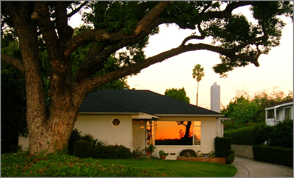
10.19.2007 10:51
Mapping European Seabed Habitats (MESH) project
Development of a framework for Mapping European Seabed Habitats (MESH)
The MESH Project started in 2004 and is made up of a consortium of twelve partners from five European countries led by the UKs Joint Nature Conservation Committee (JNCC), with financial support from the ECs INTERREG IIIB NWE Programme. The MESH partnership draws together scientific and technical habitat-mapping skills, expertise in data collation and its management, and proven practical experience in the use of seabed-habitat maps for environmental management within national regulatory frameworks. ... The website is designed to give easy access to the hundreds of project outputs that include an interactive mapping page, a catalogue of mapping studies, practical guides, tool kits, data templates and technical reports. These items cover most aspects of seabed habitat mapping from planning surveys, fieldwork standards, data handling, predictive modelling, producing maps to how to communicate your results.
10.19.2007 10:21
Walter Munk's 90th birthday
Totday is Walter Munk's 90th birthday. If you are in any sort marine
sciences, you have heard of Walter. He is one of the pillars of the
community.
10.18.2007 20:04
Thursdays in SoPas
After 10 hours of computer graphics and C++ my brain went. Jason
commented, "my that is pretty colored text that you are staring at."
I had forgotten how much more work it is to do anything in C++
compared to the land of scripting languages. It was time to get off
of the lab and get some exercise. I've always wanted to get a photo
of the lab from below in the arroyo. And now I have it. The area
below JPL is a strange frisbee golf course and a couple times a
frisbee went by my head, but there was nobody in sight. The course
has some corners that people have to shoot around.
And I love driving under this bridge along the arroyo back to where I am staying. This road hardly feels like it is in LA.
It was fun being out for a walk in the pre-halloween days!
The Rose Parade building is a huge building that I've passed a ton of times. Had to snap that.
And as sunset came, I headed over the 110 and had a tamale and a strawberry icy at the farmers market. Yum.
All-in-all, an excellent walk.
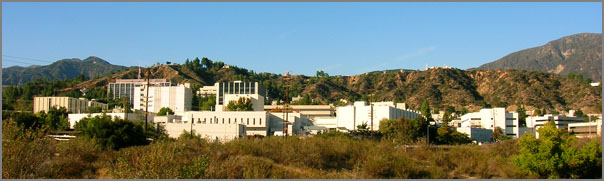
And I love driving under this bridge along the arroyo back to where I am staying. This road hardly feels like it is in LA.
It was fun being out for a walk in the pre-halloween days!
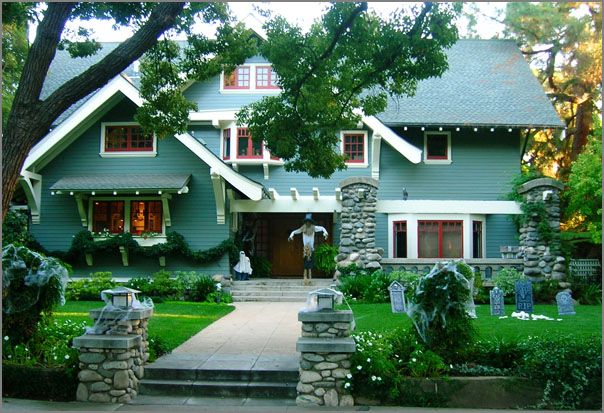
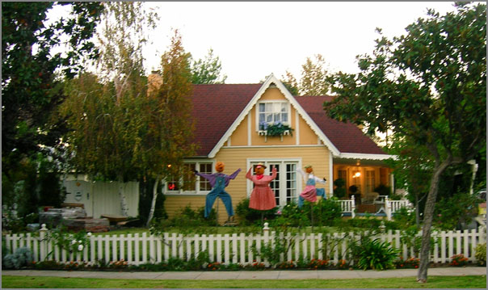
The Rose Parade building is a huge building that I've passed a ton of times. Had to snap that.
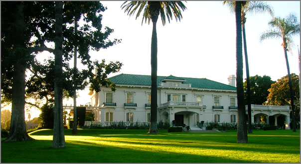
And as sunset came, I headed over the 110 and had a tamale and a strawberry icy at the farmers market. Yum.
All-in-all, an excellent walk.
10.16.2007 21:38
Evening photos
I tried to take a dramatic photo of JPL and I definitely over did it.
Not very subtle. Kind looks like what happens to older pictures from
the 70's.
This is one of the houses right near where I am staying that the full on crew working from dark-to-dark filming. Guess the threat of the writer's guild strick is pushing them hard.
Here is another shot of the same house above. This street corner was setup with huge spot lights last night.
The urban jungle...
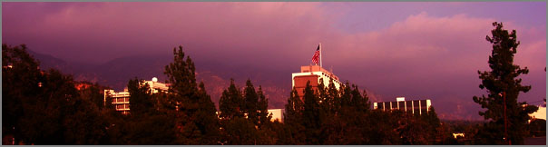
This is one of the houses right near where I am staying that the full on crew working from dark-to-dark filming. Guess the threat of the writer's guild strick is pushing them hard.
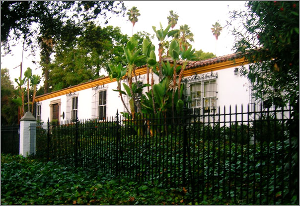
Here is another shot of the same house above. This street corner was setup with huge spot lights last night.
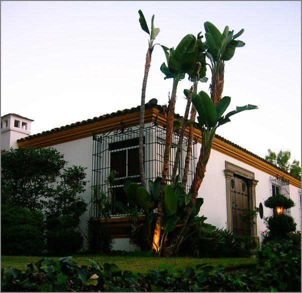
The urban jungle...
10.16.2007 11:43
Right Whale talk at CCOM
2007-10-19 2PM Chase 130 Video Classroom
Right Whales in the Wrong Place: Numerical Model of a North Atlantic
Right Whale Ship Strike
Presenter: Igor Tsukrov
Abstract:
The North Atlantic right whale is one of the most critically
endangered whales in the world (<350 individuals), and is subject to
high anthropogenic mortality. Of the 39 animals examined post-mortem
(between 1970 and 2006) 20 deaths (51.3%) resulted from ship strike
trauma. To reduce the likelihood of fatal collisions, speed
restrictions are being considered for vessels traversing critical
habitat, however the effects of speed on collision outcomes have not
been specifically evaluated from a biomechanics perspective. The goal
of this on-going study is to provide quantitative data on the
mechanics of a ship-whale collision. To achieve this goal a numerical
model of the collision was developed to determine forces acting on the
whale during impact, and to predict the extent of damage sustained by
the animal as a result of collision. Numerical simulations were
conducted using the finite element method on two levels: numerical
analysis of the entire collision event and detailed modeling of the
whale jaw bone (mandible) to predict its fracture. Finite element
analysis was supplemented by mechanical testing performed on a right
whale mandible. The developed numerical model is capable of
considering variations in collision parameters including whale mass,
ship speed, hull size and shape, and whale orientation. It is expected
to be an efficient tool to predict mortality due to whale ship
strikes, and to inform management decisions regarding effective
regulation of vessel speed in the right whale critical habitat.
10.15.2007 19:47
UNH Geophsyics faculty position
It's little strange that I heard about this through the gpmag-l
mailing list, but I'm on the wrong coast at the moment and have been
wrapped up in my research lately.
Solid Earth Geophysicist . The Department of Earth Sciences at the University of New Hampshire invites applications for a tenure-track position in solid earth geophysics at the assistant professor level starting August 2008 or thereafter. The Department of Earth Sciences (http://www.unh.edu/esci) conducts research in geology, oceanography, atmospheric sciences, and hydrology, and offers Bachelors, Masters and PhDs in the Earth Sciences. The successful candidate will be expected to teach geophysics, an introductory earth sciences course as part of the core curriculum in geology, and graduate course(s) in his/her specialty, and to develop a strong externally funded research program involving graduate and undergraduate students. Research specialization is open, but applicants with interests in tectonics that complement current departmental efforts are particularly encouraged to apply. The Department has strong ties to the Institute for the Study of Earth, Oceans, and Space (http://www.eos.sr.unh.edu/) and the Center for Coastal and Ocean Mapping (http://www.ccom-jhc.unh.edu/). Starting salary will be commensurate with experience and qualifications. A Ph.D. at the time of appointment is expected. . Review of applications begins October 22, 2007 and will continue until the position is filled. Please send complete CV, statement of research and teaching interests, and names and addresses of three references to Geophysics Search Committee, Department of Earth Sciences, University of New Hampshire, 56 College Road, Durham, NH 03824. UNH is committed to excellence through diversity among its faculty and strongly encourages women and minorities to apply.
10.15.2007 19:09
eNavigation in conjunction with RTCM AIS Working Group
This just went out today. I will be at both meetings and presenting
to the working group.
Radio Technical Commission for Maritime Services (RTCM) to hold AIS Working Group meeting in conjunction with eNavigation Conference . As part of a U. S. Coast Guard research and development project, RTCM has created a working group to study the use of AIS capabilities in support of vessel traffic management. The Working Group on Expanded Use of AIS Within VTS has been established to solicit input from stakeholder groups, review existing standards, consider technical implications of expanded AIS use and potentially develop new standards. To make it convenient for maritime industry members to attend both eNavigation 2007 and the RTCM working group meeting, RTCM has scheduled the workshop for November 15th at Coast Guard Sector Seattle headquarters, immediately following eNavigation. . For more information about the working group, please contact CDR Brian Tetreault.
10.15.2007 16:01
Mars HiRise and ExpressView
ExpressView
(by LizardTech) works like a champ for viewing HiRise Mars images on the
Mac. Here you can see that I've loaded up one of the "quick look"
images that is about 700MB compressed. As you zoom and pan, the app
works to fetch the higher resolution tiles. On the right is the
overview strip that shows the whole image. This image is large. Here
is an except from the PDS (Planetary Data System) header... PSP_001752_1750_RED.LBL
The HiRise color images are fantastic!
Then I tried to get the Photoshop CS3 plugin for JPEG 2000 to work. Norton cause photoshop to implode to the point where I had to uninstall and reinstall the whole deal.
OBJECT = UNCOMPRESSED_FILE
FILE_NAME = "PSP_001752_1750_RED.IMG"
RECORD_TYPE = FIXED_LENGTH
RECORD_BYTES = 56814 <BYTES>
FILE_RECORDS = 58617
^IMAGE = "PSP_001752_1750_RED.IMG"
OBJECT = IMAGE
DESCRIPTION = "HiRISE projected and mosaicked product"
LINES = 58617
LINE_SAMPLES = 28407
PSP_001752_1750
- Evidence for Water and Wind Processes in Gale Crater
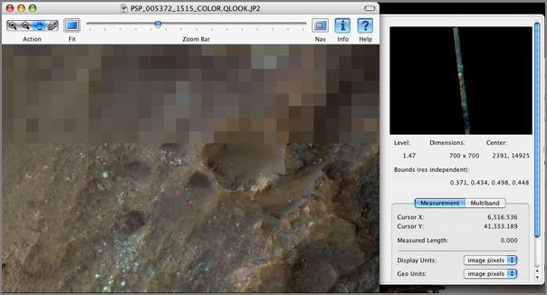
The HiRise color images are fantastic!
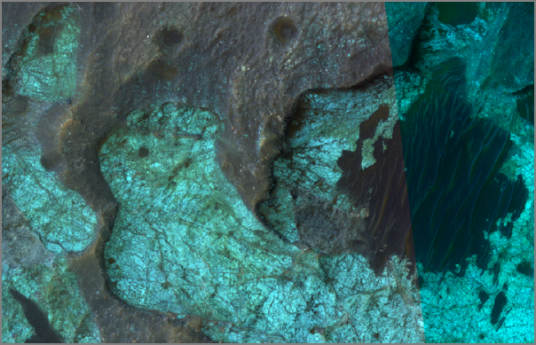
Then I tried to get the Photoshop CS3 plugin for JPEG 2000 to work. Norton cause photoshop to implode to the point where I had to uninstall and reinstall the whole deal.
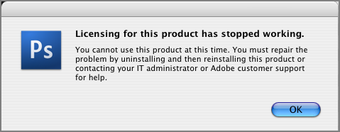
10.15.2007 15:27
gdal jpeg2000 support in fink via jasper
I've added JPEG 2000 support to gdal in fink using the JasPer library.
Unfortunetly, that means that HiRise Mars images will not load.
Sorry. The other libraries are all non-source based distributions and
MrSID seems to be MS Windows only.
You may see something like this (or a segfault) when trying to handle large images. Here I tried to take a small subset of an image.
You may see something like this (or a segfault) when trying to handle large images. Here I tried to take a small subset of an image.
gdal_translate -of PNG -srcwin 10 10 1000 1000 PSP_005372_1515_RED.QLOOK.JP2 foo.png Input file size is 32369, 95295 error: cannot decode code stream gdal_translate(22843) malloc: *** vm_allocate(size=3084607488) failed (error code=3) gdal_translate(22843) malloc: *** error: can't allocate region gdal_translate(22843) malloc: *** set a breakpoint in szone_error to debug ERROR 2: Internalize failed ERROR 1: GetBlockRef failed at X block offset 0, Y block offset 0 libpng error: No IDATs written into file Abort trap
10.15.2007 13:10
jpip
Today is jpip day for me.

The main component of Part 9 is a client-server protocol called JPIP. JPIP may be implemented on top of HTTP, but is designed with a view to other possible transports. To facilitate its deployment in systems with varying degrees of complexity, JPIP handles several different formats for the image data returned by the server: these include ordinary image formats, such as complete JPEG or JPEG 2000 files, and two new types of incremental "stream" that use JPEG 2000's "tiles" and "precincts" to take full advantage of its scalabilty properties. JPIP also supports both stateless and stateful modes of operation, enabling sophisticated cache-modelling to eliminate the redundant transmission of data.
10.13.2007 15:22
Fink packages for featureserver, pythonpaste, and moinmoin
I've whipped up some initial fink info files for FeatureServer, PythonPaste, and MoinMoin. I haven't really
run these through any sort of tests, so I can use some feedback.
Still to go is adding apache2 mod-available files so these things can
be used with mod-python. I am pretty sure that these programs will
not yet correctly find their cfg and the static data files. The cgi
scripts are in /sw/lib/cgi-bin.
The info files can be had from:
http://vislab-ccom.unh.edu/~schwehr/software/fink/
The info files can be had from:
http://vislab-ccom.unh.edu/~schwehr/software/fink/
10.13.2007 10:41
Saturday morning in southpas
I've been slow to pick up the camera this week. This morning, I
ventured up the hill to get some coffee at Busters. It is currently
at the top of the list for a place to sit for an hour or two.
Across the street in the little park where they do movies on the side of the building during summer, I heard a racket that sounded like parrots. Yup, parrots. Probably the same deal as in SF where escaped pets meet up.
Then down in the arroyo, I was wondering what terrible event had occurred until I realized that what looks like the entire fire department is out do ladder practice. I always enjoyed the fire drills on research ships when we get to try out the fire hoses.
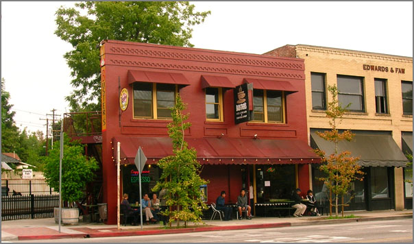
Across the street in the little park where they do movies on the side of the building during summer, I heard a racket that sounded like parrots. Yup, parrots. Probably the same deal as in SF where escaped pets meet up.
Then down in the arroyo, I was wondering what terrible event had occurred until I realized that what looks like the entire fire department is out do ladder practice. I always enjoyed the fire drills on research ships when we get to try out the fire hoses.
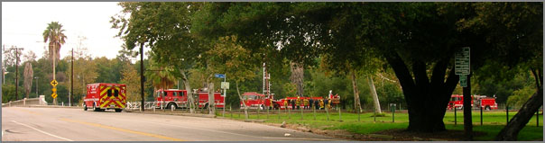
10.12.2007 15:51
gmt 4.2.1 in fink
Remko has created info files for GMT 4.2.1 in fink. 4.2.0 now lives
in stable. Also look for gshhs-{lores,hires} to get the coastline
data.
BTW, if density's simpleview in fink craps out (gets stuck on load), you need to do
BTW, if density's simpleview in fink craps out (gets stuck on load), you need to do
fink rebuild soqt25 fink rebuild densitySeems that changes in the QT library are not binary compatible.
10.11.2007 16:22
density simpleview gets long needed improvements
I'm using simpleview to aid development of some geometric code and
finally hit the breaking point with simpleview having a really lame
starting configuration. A little searching got me the tricks on how
to set the window size for SoQtExaminerViewer and SoCamera knows how
to "viewAll."
Setting the window size at startup can be had by tweaking the QWidget that SoQt::init() returns.
Then for the camera view, it is easy enough to ask the camera to view the whole volume. "si" is a small class that has all of my scene info.
It is nice to finally have that done. Two items that have been on my "to do" list for 3 years.
Setting the window size at startup can be had by tweaking the QWidget that SoQt::init() returns.
#includeWhere are "a" contains my command line args from gengetopts.... myWindow->resize(a.width_arg,a.height_arg);
Then for the camera view, it is easy enough to ask the camera to view the whole volume. "si" is a small class that has all of my scene info.
si->camera->viewAll(si->root,myViewer->getViewportRegion(),10);
It is nice to finally have that done. Two items that have been on my "to do" list for 3 years.
10.11.2007 12:21
SoCal python group - moinmoin
Last night, I dropped by the SoCal Piggies (Pythhon Interest Group).
As usual, python folks (me included) always get excited talking about
python. Andrew and Thomas were there talking about MoinMoin. The
discussions went on for 3 and 1/2 hours. Quite the marathon.
They gave a great overview of MoinMoin, both where it is currently and where it is going. I tried to create a fink package of moinmoin, but didn't quite get through it. I've only experienced MoinMoin from the user side, so there is a little bit to get figured out for setting up a server.
They pointed out a useful website that compares wikis:
WikiMatrix
They gave a great overview of MoinMoin, both where it is currently and where it is going. I tried to create a fink package of moinmoin, but didn't quite get through it. I've only experienced MoinMoin from the user side, so there is a little bit to get figured out for setting up a server.
They pointed out a useful website that compares wikis:
WikiMatrix
10.11.2007 11:53
Digital Coast Legislative Atlas
Agency AwardNOAA | Digital CoastMapping the laws [gcn.com]
... Digital Coast was built primarily using ESRIs suite of geographic information system tools. But the intended primary audience for the atlas is resource managers, most of whom have little or no experience with desktop GIS tools. So developing programming tools that could move the application to the Web was critical. Development of Googles Keyhole Markup Language for displaying geospatial data on the Web, along with tools for converting data from ESRI format to KML, were especially important. ... "It was an eye-opening experience for us, said Cindy Fowler, GIS integration and development manager. As we started uncovering the laws, we realized pretty quickly that all of these things wouldnt hold up [against] the modern mapping standards." ...
10.11.2007 11:37
blasted, I'm missing the blasting
Sometimes I get some highly amusing emails that go beyond the usual
work chatter. And sometimes the are even real and not just telling me
that I won the lottery in Turkmenistan. I wish we had a web cam on the roof!
Folks, . I've just been informed that the blasting on the new building site is about to start --- in a little under an hour, in fact. . We don't know how much noise/vibration this is going to make, but you should expect to see and feel it somewhat. You'll probably hear sirens before the actual blast itself. . I would suggest that you make sure that anything particularly sensitive is saved to your hard-disc in case we have a power failure as a result; it would probably be best to stay away from the windows on the side of the building nearest the site. . I'll let you know more as I hear it. . Cheers, Brian.I'm seriously missing out. Maybe I'll get an earthquake to make up for not being there. Haven't felt a good one of those in a lot of years.
10.10.2007 20:27
density release 0.22
I just released a new version of density. It is a Coin3D / SimVoleon
based set of tools for working with 3D polygon and volumetric data.
This release fixes the offscreen render wrapper script (which
apparently is not being used by anyone other than me). I also
fixed some minor bugs in the fink packaging.
I'm running into troubles with offscreen rendering on the mac. It seems to crash the Apple X11 server. I was going to make and post a little movie using "render," but that won't happen until I figure out the bug.
I'm running into troubles with offscreen rendering on the mac. It seems to crash the Apple X11 server. I was going to make and post a little movie using "render," but that won't happen until I figure out the bug.
10.10.2007 17:54
ecmascript
ecmascript has finally
bubbled high enough up my priority stack that I am working on learning
javascript and ActionScript 3. Having Flash bundled into CS3 Web
Complete can only be a good thing. I am also looking at Adobe AIR (formerly
Apollo) and Flex.
There is a ton of potential with these platforms and Javascript is hiding in all sorts of important corners (openlayers, web dnd, etc).
There is a ton of potential with these platforms and Javascript is hiding in all sorts of important corners (openlayers, web dnd, etc).
10.09.2007 12:33
West Coast blue whale deaths from ship strikes
A couple people have told me about these news items. I have been
disconnected from my normal news sources lately, so I appreciate the
pointers.
Whale death attributed to ship strike [latimes - 23-Sep-2007]
General Information About the Third Whale [sbnature.org]
Whale death attributed to ship strike [latimes - 23-Sep-2007]
The blue whale found dead last week in the Santa Barbara Channel was probably the third victim of a ship collision in two weeks, scientists said Saturday as they conducted a post-mortem on the 60-ton creature. . As surf roiled around the massive carcass on a beach at Point Mugu, biologists cut doorway-size openings in its belly and probed its organs for tissue specimens. About an hour after they had peeled back 4-inch-thick sheets of snowy blubber, they started removing foot-long bone fragments that had chipped away from the animal's 9-foot ribs. Later, they found other fractured bones, including a smashed cranium. . "It's definitely a ship strike," said Easter Moorman, a spokeswoman for the Santa Barbara Museum of Natural History, which was directing the necropsy of the not-quite fully grown male. "The animal died instantly." . Three blue whales -- members of the largest species on Earth -- have been discovered dead off Southern California in the last two weeks, the most recent on Wednesday. Two found in the Santa Barbara Channel were thoroughly examined by scientists, who concluded that they were hit by ships. One found in Long Beach Harbor was towed out to sea, but a biologist who viewed it said it probably had been hauled into port on a ship's bow. ...And
General Information About the Third Whale [sbnature.org]
General Information About the Third Whale:
.
* ID Tag: SBMNH 2007-20
* Stranding Location: Near Platform Gail and floated to south of Platform Grace
* Size: About 60-65 feet long
* Gender: Male (subadult)
* Cause of Death: Ship Strike
* Necropsy: Completed September 22, 2007
.
In September, There Have Been Three Blue Whale Strandings off the
Southern California Coast:
* September 8, 2007: Long Beach Harbor
* September 14, 2007: Ventura County, Hobson County Beach
* September 21, 2007: Ventura County, Beach TBD
And finally...
Emergency Ship Speed Limits Sought to Protect Blue Whales [environmental news service]
SAN FRANCISCO, California, September 25, 2007 (ENS) - The Center for Biological Diversity today formally petitioned the federal government to set speed limits for ships in the Santa Barbara Channel off southern California to protect endangered blue whales. . At least three dead blue whales have been documented in southern California over the past two weeks. The Santa Barbara Museum of Natural History, which conducted analyses of the dead whales, determined that ship strikes caused all three of the deaths. . It was reported the week of September 9 that there were about 100 blue whales in the Santa Barbara Channel and that their primary food source, tiny crustaceans called krill, was prevalent in the shipping lanes. . Most large vessels plying the Santa Barbara Channel are heading to or from the ports of Los Angeles and Long Beach. Several thousand container ships transit the channel each year. ... Museum scientists have a "working theory" that domoic acid, a toxin associated with certain algal blooms, may be a contributing factor to the whales' deaths. ... "Whether the blue whales are being disoriented by military sonar, toxic algae or something else entirely, what is actually killing them is speeding ships," said Brendan Cummings, oceans program director for the Center for Biological Diversity. "The single most effective thing we can do to protect blue whales is to slow down large ships." ...
10.08.2007 02:04
Sonora Desert Museum
In addition to spending a large portion of the day reading about ldap,
Jeff gave me a tour of the Sonora Desert Museum. Is is a quick trip
from Tucson west along Speedway and up through Gates Pass.
There is a great section of butterflies. However, no hawk moths (Jeff current research subject).
There were some seriously crazy cacti in the park.
This is not a pig, but a javelina. These critters with huge teeth are native to the United States unlike pigs.
As cute as this cat is, it is certainly no house cat. The paws look bigger than my hands.
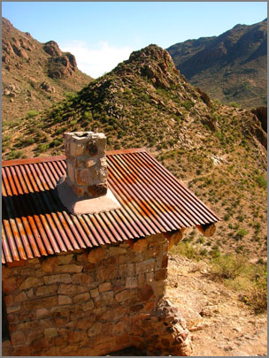
There is a great section of butterflies. However, no hawk moths (Jeff current research subject).
There were some seriously crazy cacti in the park.
This is not a pig, but a javelina. These critters with huge teeth are native to the United States unlike pigs.
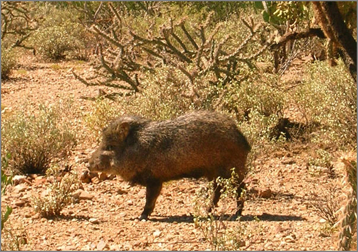
As cute as this cat is, it is certainly no house cat. The paws look bigger than my hands.
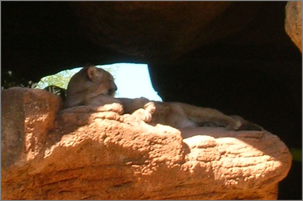
10.07.2007 21:24
First bit of openldap progress
I finally was able to get some LDIF files to import into openldap.
First off, I am using openldap23 from fink:
First, I had to edit /sw/etc/openldap/slapd.conf. I edited the includes at the top have add cosine and inetorgperson schemas:
And finally a slapcat to look at the contents of the database:
fink list -i openldap Information about 6680 packages read in 0 seconds. i openldap-ssl-shlibs 2.1.29-1025 Shared libraries for LDAP i openldap23 2.3.27-10 LDAP directory services implementation i openldap23-dev 2.3.27-10 Libraries and headers for LDAP development i openldap23-shlibs 2.3.27-10 Shared libraries for LDAPI ran into a number of stumbling blocks that were not covered in the docs that I have been reading.
First, I had to edit /sw/etc/openldap/slapd.conf. I edited the includes at the top have add cosine and inetorgperson schemas:
include /sw/etc/openldap/schema/core.schema include /sw/etc/openldap/schema/cosine.schema include /sw/etc/openldap/schema/inetorgperson.schemaThen in the database at the bottom of the slapd.conf, I setup a dummy schwehr.org domain.
database bdb
suffix "dc=schwehr,dc=org"
rootdn "cn=Manager,dc=schwehr,dc=org"
# Cleartext passwords, especially for the rootdn, should
# be avoid. See slappasswd(8) and slapd.conf(5) for details.
# Use of strong authentication encouraged.
#rootpw secret
rootpw {SSHA}somelargehash
# The database directory MUST exist prior to running slapd AND
# should only be accessible by the slapd and slap tools.
# Mode 700 recommended.
directory /sw/var/openldap-data
# Indices to maintain
index objectClass eq
Replace somelargehash above with the results of "sudo slappasswd". I
then had to cleanup from previous slapd instances. First do a ps -aux
| grep slapd and kill slapd if it is running. If things are well, you
can do:
kill `cat /sw/var/run/slapd.pid`Remove all previous database info. WARNING: If you have a real database, this will destroy all your data!!!!
cd /sw/var/openldap-data sudo rm -f log.0000000001 alock __db.00* *.bdbMake sure that you have a DB_CONFIG file.
cp DB_CONFIG.example DB_CONFIGNow check your config file.
slaptest -f /sw/etc/openldap/slapd.confI first tried adding both the root and the people at the same time. This did not work. The combined file:
cat >> EOF > ~/people.ldif
## Build the root node.
dn: dc=schwehr,dc=org
dc: schwehr
objectClass: dcObject
objectClass: organizationalUnit
ou: Schwehr Dot Org
## Build the people ou.
dn: ou=people,dc=schwehr,dc=org
ou: people
objectClass: organizationalUnit
EOF
But that gave me an error. Why? I don't know.
slapadd -v -l ~/people.ldif bdb_db_open: Warning - No DB_CONFIG file found in directory /sw/var/openldap-data: (2) Expect poor performance for suffix dc=schwehr,dc=org. str2entry: entry -1 has multiple DNs "dc=schwehr,dc=org" and "ou=people,dc=schwehr,dc=org" slapadd: could not parse entry (line=12)Then I tried each piece separately and it worked!
% cat >> EOF > ~/people1.ldif ## Build the root node. dn: dc=schwehr,dc=org dc: schwehr objectClass: dcObject objectClass: organizationalUnit ou: Schwehr Dot OrgWhen added gives:
% slapadd -v -l ~/people1.ldif added: "dc=schwehr,dc=org" (00000001)And the second part with the people entry:
% cat >> EOF > ~/people2.ldif ## Build the people ou. dn: ou=people,dc=schwehr,dc=org ou: people objectClass: organizationalUnitThat results in:
% slapadd -v -l ~/people2.ldif added: "ou=people,dc=schwehr,dc=org" (00000002)Start the ldap server:
% slapd -f /sw/etc/openldap/slapd.confI used gq to browse the database:
gq &
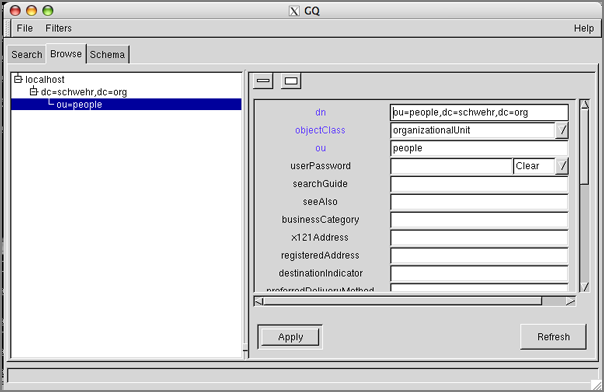
And finally a slapcat to look at the contents of the database:
slapcat dn: dc=schwehr,dc=org dc: schwehr objectClass: dcObject objectClass: organizationalUnit ou:: U2Nod2VociBEb3QgT3JnICAgICA= structuralObjectClass: organizationalUnit entryUUID: ed352594-0984-102c-9c76-7977ca58b6da creatorsName: cn=Manager,dc=schwehr,dc=org modifiersName: cn=Manager,dc=schwehr,dc=org createTimestamp: 20071008005537Z modifyTimestamp: 20071008005537Z entryCSN: 20071008005537Z#000000#00#000000
dn: ou=people,dc=schwehr,dc=org ou: people objectClass: organizationalUnit structuralObjectClass: organizationalUnit entryUUID: 0a9635a6-0985-102c-89af-21c7102a7e23 creatorsName: cn=Manager,dc=schwehr,dc=org modifiersName: cn=Manager,dc=schwehr,dc=org createTimestamp: 20071008005626Z modifyTimestamp: 20071008005626Z entryCSN: 20071008005626Z#000000#00#000000
10.07.2007 20:04
openldap
I'm looking into openldap and reading LDAP System Administration from
Safari. I had started with How_to_setup_and_maintain_OpenLDAP_server_for_your_network
on fedoranews.org and got a bit stuck.
From there, I found MigratonTools. It is a perl package with scripts to read user information from NetInfo and create export files (ldif) for ldapadd. However, the script does not seem to work. It will take a little tweaking once I know more to get it to be happy.
Once I have a demo ldap server (slapd) running, then I can do things such creating a fink package for python-ldap
While reading the ldap book I ran into this from /sw/etc/openldap/schema/cosine.schema...
Pardon me?
From there, I found MigratonTools. It is a perl package with scripts to read user information from NetInfo and create export files (ldif) for ldapadd. However, the script does not seem to work. It will take a little tweaking once I know more to get it to be happy.
Once I have a demo ldap server (slapd) running, then I can do things such creating a fink package for python-ldap
While reading the ldap book I ran into this from /sw/etc/openldap/schema/cosine.schema...
Pardon me?
# 9.3.5. Favourite Drink
#
# The Favourite Drink attribute type specifies the favourite drink of
# an object (or person).
#
# favouriteDrink ATTRIBUTE
# WITH ATTRIBUTE-SYNTAX
# caseIgnoreStringSyntax
# (SIZE (1 .. ub-favourite-drink))
# ::= {pilotAttributeType 5}
#
attributetype ( 0.9.2342.19200300.100.1.5
NAME ( 'drink' 'favouriteDrink' )
DESC 'RFC1274: favorite drink'
EQUALITY caseIgnoreMatch
SUBSTR caseIgnoreSubstringsMatch
SYNTAX 1.3.6.1.4.1.1466.115.121.1.15{256} )
10.07.2007 03:15
Sabino Canyon
In contrast to working on ldap and openlayers stuff much of today,
Jeff and I took a hike up in Sabino Canyon in the late afternoon. It
is an amazing spot totally unlike another other place I've been.
Jeff pointed out some crazy big grasshoppers. The same ones Kiley had sent me pictures of.
Even wilder was this guy who was just sitting in the road.
And there was a great sunset.
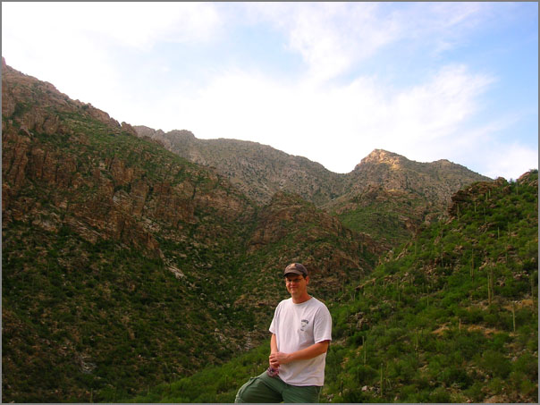
Jeff pointed out some crazy big grasshoppers. The same ones Kiley had sent me pictures of.
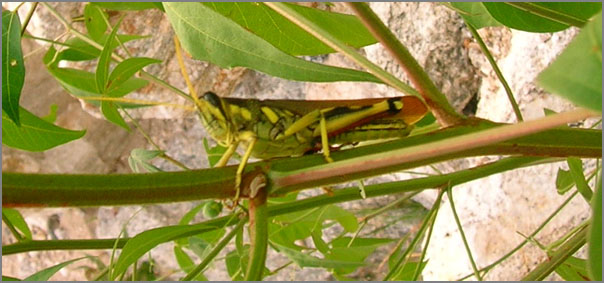
Even wilder was this guy who was just sitting in the road.
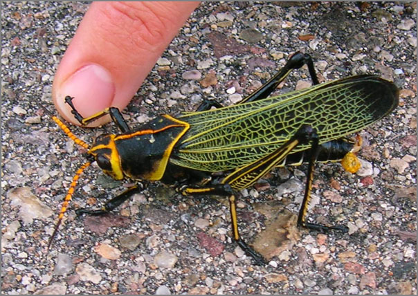
And there was a great sunset.
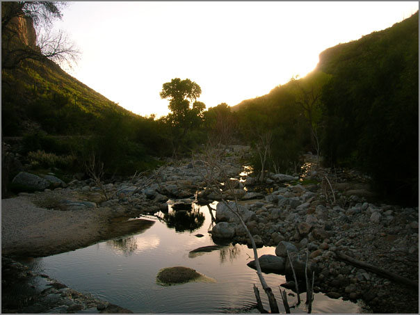
10.06.2007 14:54
Tucson morning
I took a couple mile walk today and got some good pictures of the Tucson foothills.
10.05.2007 16:07
Making ellipses in Photoshop
Steve showed me a trick on how to make ellipses and circles in
Photoshop to highlight features in images. I had been using
Illustrator, but it is better to do that in Photoshop and preserve the
image size.
First make a new layer and select it in the layer window.
First switch to the Elliptical Marque Tool in the Tools window.
Select a region. Here I am highlighting the AC unit on top of some random house in Tucson. The highlight edges are where the ellipse will go.
Now select Edit -> Stroke.
Pick your color and how many pixels thick the line will be.
Hitting okay will reveal the ellipse.
Now to may a semi-transparent filling by doing Edit -> Fill. Make the Opacity lower. Here I used 20%. Select Use: Color (or reselect it) to get the color picker to pop up.
I now have a shaded and highlight region.
Here is using the Magic Wand tool to outline/highlight an irregular region.
Here is after changing the Stroke and Fill.
And the final result.
First make a new layer and select it in the layer window.
First switch to the Elliptical Marque Tool in the Tools window.
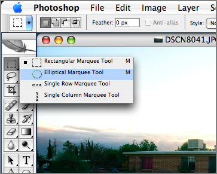
Select a region. Here I am highlighting the AC unit on top of some random house in Tucson. The highlight edges are where the ellipse will go.
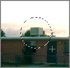
Now select Edit -> Stroke.
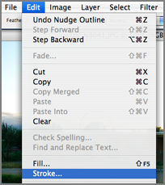
Pick your color and how many pixels thick the line will be.
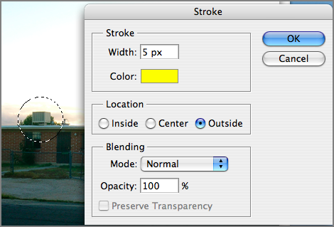
Hitting okay will reveal the ellipse.
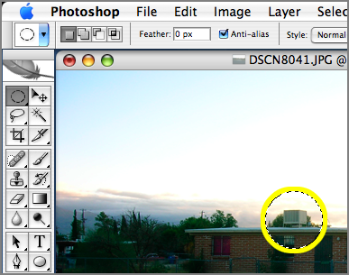
Now to may a semi-transparent filling by doing Edit -> Fill. Make the Opacity lower. Here I used 20%. Select Use: Color (or reselect it) to get the color picker to pop up.
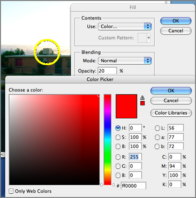
I now have a shaded and highlight region.
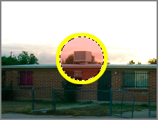
Here is using the Magic Wand tool to outline/highlight an irregular region.
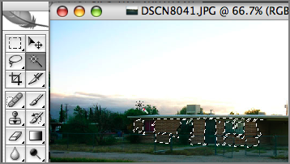
Here is after changing the Stroke and Fill.
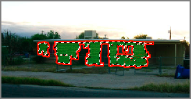
And the final result.
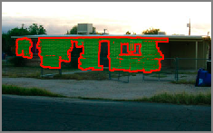
10.05.2007 11:07
Morning photo walk in Tucson
I took a walk this morning around the Tucson Spacecraft Operation
Center (SOC). The weather was perfect and not many people were out
and about at sunrise. The mountains surrounding the Tucson area are
really spectacular. I don't think this picture does them justice.
And I had to take yet another image of the mural on the side of the SOC. The image is a good illustration of sperical lense distorion.
The road to nowhere...
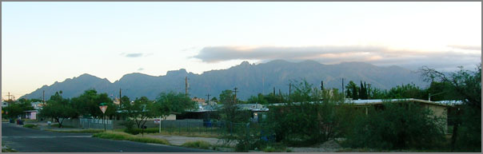
And I had to take yet another image of the mural on the side of the SOC. The image is a good illustration of sperical lense distorion.
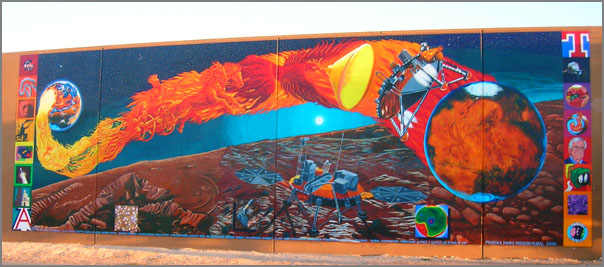
The road to nowhere...
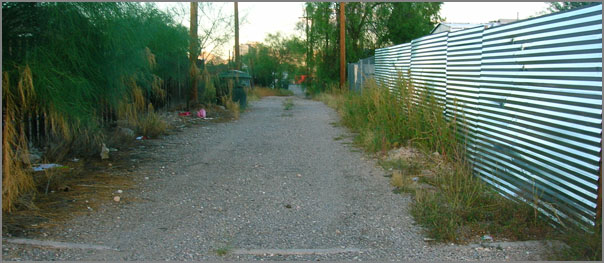
10.04.2007 21:17
xwd and xwininfo to make a movie
During the recent ORT, I had to pull off a quick movie under tight
time constraints. All of my usual routes of making movies were out:
no VNC moves, scan converters, xvidcap, Jing, CamStudio, etc. This
was on a linux box that was locked down (with respect to the time
frame). What to do? I came up with an X11 solution. Time to go old
school. I had the ability to slow down the 3D rendering and had
imagemagick on the machine, so here is my solution complete with a
little python...
The key was the X Windows Dump (xwd) program that has been around for ever. It is not elegant, but it really can get the job done. The first task was to get the 3D graphics X11 window id. This helps to constrain the data volume such that I am not capturing all 2kx1k pixels on the display. It works something like this (which is a quick dump on my Mac).
And that is a nice little old school hack. Like I thought that I would ever pull out xwd or xwininfo again.
The key was the X Windows Dump (xwd) program that has been around for ever. It is not elegant, but it really can get the job done. The first task was to get the 3D graphics X11 window id. This helps to constrain the data volume such that I am not capturing all 2kx1k pixels on the display. It works something like this (which is a quick dump on my Mac).
xwininfo
xwininfo: Please select the window about which you
would like information by clicking the
mouse in that window.
I then clicked in the window (here just an xterm):
xwininfo: Window id: 0xa0000e "xterm"The key is that "Window id". Now I could ask xwd to grab that window id. But I want to create a sequence of numbered frames. I could do this in bash, perl, python or what ever, but Steve taunted me about python as he is a very good perl programmer. Therefore, python it was...
Absolute upper-left X: 635 Absolute upper-left Y: 291 Relative upper-left X: 0 Relative upper-left Y: 22 ...
#!/usr/bin/env python
import os,sys
for count in range(500):
filename='/tmp/foo%03d.xwd' % count
print filename
os.system("xwd -id 0x2800004 -out "+filename )
os.system('sleep .2')
That is definitely just a hack (like not calling time.sleep()) and I
have since created a complete program with an extensive command line
interface, but it serves the purpose of illustration. Running that
dumps a whole mess of xwd images into /tmp. From that I needed to
make an animated gif that is a subset of the original frames. There
were parts of the display that I can't release. The imagemagick
convert program does it all. It will crop and make an animated gif
with a specified delay between each frame.
convert -crop 640x480+303+80 -delay 100 /tmp/foo???.xwd /tmp/movie.gifAnd that's it. I loaded the gif into firefox and had a little movie. The results looked better when Steve put the frames through QuickTime pro, but the gif did get the job done.
And that is a nice little old school hack. Like I thought that I would ever pull out xwd or xwininfo again.
10.04.2007 20:54
Aqua Open Office
For this ORT, I tried to use the Aqua version of Open Office on a
MacBook Pro. OO seems capable, but I hit a number of snags and I will
absolutely have to get MS Office on this computer. First off, when OO
saved a power point file out, it stuck symbol garbage in front of each
numbered bullet. The numbers are then in PowerPoint, but I don't know
how to get at the symbols and remove them. Then there were the
crashes. I got a batch of them while editing a slide in the middle of
a meeting. Then the final trouble was that I had trouble with
drag-n-drop (aka DND). The big OO root window gets in the way and the
document often (did it ever?) open with a dnd event.
However, in favor of OO, the progress is quite substantial when compared to when I last tried it a couple of years ago. A lot of the engineering team uses OO on the linux boxes in the SOC with good results.
However, in favor of OO, the progress is quite substantial when compared to when I last tried it a couple of years ago. A lot of the engineering team uses OO on the linux boxes in the SOC with good results.
10.04.2007 20:45
ORT 6 is over
Operational Readiness Test number 6 (ORT-6) is done for my team. The
sequencing teams still have a couple days left and I have a couple
tasks tomorrow here in the Tucson SOC (Spacecraft Operation Center).
For my roles and the SSV team tasks, things went extremely well. It is
great to see a lot of familiar faces across the teams from MPF (that would
be Mars Pathfinder), MPL (Mars Polar Lander), MER (Mars Exploration
Rovers), and many field tests.
I just realized that I had not started blogging during MER. My first blog entry was in 04 December 2004, almost 3 years ago. I stopped working full-time for MER in mid-May of 2004.
Here are some pictures from around the ORT.
Steve and Paul demonstrated how much fun IPRW is. Chris did a bang up job rewriting and improving the MER tool chain. Progress moves forward.
Here is a view of the press area. Don't expect this space to even be recognizable from the picture come mission time.
Here is proof that I was actually here. You might see me in the background of other peoples pictures, but I don't often get a chance to stop to be in pictures.
And it's not all work. Kiley, Jeff, and I went one evening to go bowling. The 50 cent beers were, well... um. They were in little dixie cups. We had to wear wrist bands that said "Ok For Alcohol." That just sounds strange. Pretty funny!
I just realized that I had not started blogging during MER. My first blog entry was in 04 December 2004, almost 3 years ago. I stopped working full-time for MER in mid-May of 2004.
Here are some pictures from around the ORT.
Steve and Paul demonstrated how much fun IPRW is. Chris did a bang up job rewriting and improving the MER tool chain. Progress moves forward.
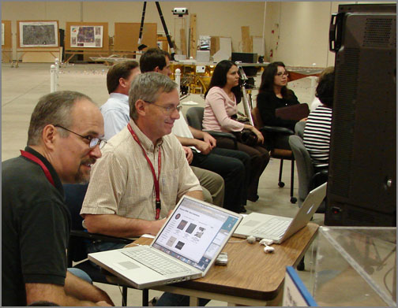
Here is a view of the press area. Don't expect this space to even be recognizable from the picture come mission time.
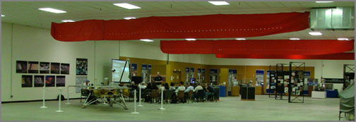
Here is proof that I was actually here. You might see me in the background of other peoples pictures, but I don't often get a chance to stop to be in pictures.
And it's not all work. Kiley, Jeff, and I went one evening to go bowling. The 50 cent beers were, well... um. They were in little dixie cups. We had to wear wrist bands that said "Ok For Alcohol." That just sounds strange. Pretty funny!
10.02.2007 13:52
No wikipedia entry for goertite
I was hoping to find some background info on wikipedia on iron oxides,
but ran out of luck because of not knowing how to spell the mineral.
Hematite is there:
http://en.wikipedia.org/wiki/Hematite
There is an overall list of minerals:
http://en.wikipedia.org/wiki/List_of_minerals
Then I found:
Goethite
Hematite is there:
http://en.wikipedia.org/wiki/Hematite
There is an overall list of minerals:
http://en.wikipedia.org/wiki/List_of_minerals
Then I found:
Goethite
10.02.2007 13:40
Phoenix Mars Lander CPU
The project is talking lot about blogs that cover the Phoenix Mars
Lander. I found one myself that caught my eye:
Junkbot Phoenix Mars Lander Launches with Ancient RISC Processor Aboard
Junkbot Phoenix Mars Lander Launches with Ancient RISC Processor Aboard
... As reported by Colleen Taylor at Electronic News, the brains of the Phoenix Mars Lander consists of a BAE, formerly Lockheed Martin, formerly IBM Federal Systems RAD6000 computer, which has a fascinating heritage that leads directly to the original RISC processor, John Cockes IBM 801 project. The purpose of that project, started in 1974, was to create a processor for a programmable telephone switch. It represented a backlash against extreme CISC (complex instruction-set computer) as epitomized by IBMs 360 computer architecture. The problem with the extreme-CISC design approach was that it required that the machines clock be slowed to accommodate a lot of logic in each stage of the CPU. The telephone-switch processor needed about 10 MIPS when the best IBM 360 implementation could only achieve about 2 MIPS. ...
10.01.2007 23:22
Coin 2.5.0 released
Chalk another major item on the to do list. SIM just released Coin
2.5.0. I would really like to spend some time checking out the new
SoGeo nodes. It will probably be a while before I have time to
get a fink package setup and tested.
The announcement:
The announcement:
Coin 2.5.0 Released ===================
Systems in Motion is proud to release v2.5.0 of the Coin 3D graphics library. Coin 2.5.0 is a minor release. It extends the functionality of previous versions of Coin 2.* in upward compatible ways. It also fixes bugs and problems found in releases 2.0.0 through 2.4.6, and includes updates to the documentation. The API and ABI of the library have been considerably extended for this version, but not in any way that could conflict with older versions of Coin 2.*.
Coin 3.0.0 is expected to be released on april 1st 2008, and we will aim for minor or major releases every 6 months, with random micro- releases for the usual bugfixes inbetween when/if deemed necessary.
NEWS File Excerpt: ================== * new: - geo nodes: SoGeoOrigin, SoGeoCoordinate, SoGeoLocation, SoGeoSeparator - shader nodes: SoVertexShader, SoFragmentShader, SoGeometryShader, SoShaderProgram, SoShaderParameter - shadow generation: SoShadowGroup, SoShadowCulling, SoShadowStyle - new camera node SoFrustumCamera - new node SoTextureCubeMap - a lot of new SbVec and SbBox classes - a lot of new field classes (mostly Vec and Box fields) - implemented stubbed SoSimplifyAction, added SoGlobalSimplifyAction and SoShapeSimplifyAction as stub classes - SoReorganizeAction improvements - SoFile:: setSearchOK(), getSearchOK() - SoGLRenderAction::setSortedObjectOrderStrategy() - SbTypeInfo.h template type information library
10.01.2007 20:10
Phoenix ORT 6
Right now we are in the middle of Operational Readiness Test #6 (ORT6)
for the Phoenix Mars Lander. Things are going well and there are lots
of good work going on. There are quite a few wikis going within the
project helping to document things and the project has been talking
about lots of digital media technologies.
I got excited when people started talking about digg, slashdot, live blogging (err... what I am doing at the moment), gizmodo, del.icio.us, seeding youtube, etc. Woohoo! The world I normally live in and problably a lot of the other engineers on the team. The SpaceGrant program is thinking about facebook. This stuff really helps build a commnity both inside and outside of the spacecraft team.
I love working on forward looking projects. The immediacy is such a kick.
Check out http://phoenix.lpl.arizona.edu/, where people on the project are blogging.
I got excited when people started talking about digg, slashdot, live blogging (err... what I am doing at the moment), gizmodo, del.icio.us, seeding youtube, etc. Woohoo! The world I normally live in and problably a lot of the other engineers on the team. The SpaceGrant program is thinking about facebook. This stuff really helps build a commnity both inside and outside of the spacecraft team.
I love working on forward looking projects. The immediacy is such a kick.
Check out http://phoenix.lpl.arizona.edu/, where people on the project are blogging.